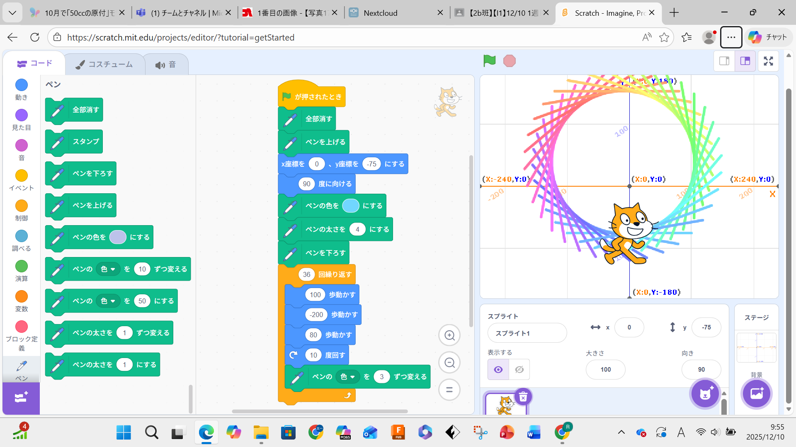
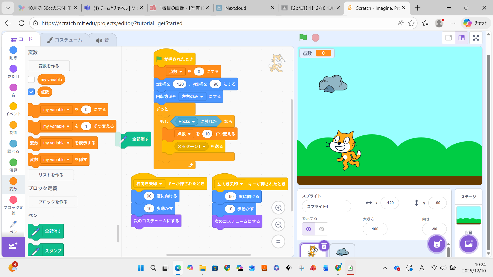

1週目のレポート ： 公大高専１年実習I-1
2b班3番 taichi0324
第1週目
1-1 サイエンスアート

1.内容
SCRATCHというプログラミングソフトを用いて、そのソフトのキャラクターであるネコを移動させたり、移動に合わせて線を引かせる、
繰り返し移動させることによって図形を描かせる等を行った。
2.感想
このサイエンスアートの実習では、動きなどの比較的簡単で基礎的なコマンドを用いてプログラミングしたが、そのおかげでブロックごとの動き方 などをよく考えてプログラミングすることができ、非常に自分のためになった。
繰り返し移動させることによって図形を描かせる等を行った。
1-2 ゲーム

1.内容
学習した内容を説明する文章を
自分で考えて作成する（50文字以上．100文字程度を推奨．※生成AIを使ってはいけない）
2.感想
SCRATCH自体は小学生のころから利用しているとてもなじみのあるソフトであるが、今回の実習ではいつもあまり使わない変数や演算などの
コマンドを使用したことで自分には少し難しいと感じたが、その分できた時の達成感はとても大きかった。
1-3 ホームページ作成
私のホームページ
1.内容
学習した内容を説明する文章を
自分で考えて作成する（50文字以上．100文字程度を推奨．※生成AIを使ってはいけない）
2.感想
学習した内容を実践したときに自分が感じた感想を
自分で考えた文章で作成する（50文字以上．100文字程度を推奨．※生成AIを使ってはいけない）
各ページへのリンク
1週目のレポート
2週目のレポート
3週目のレポート
私のホームページ